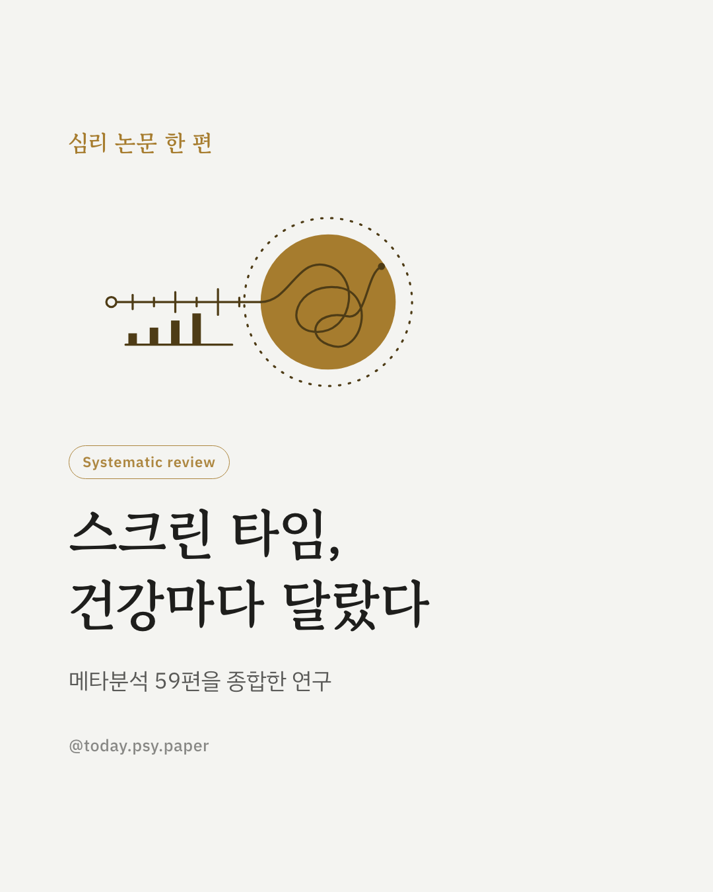
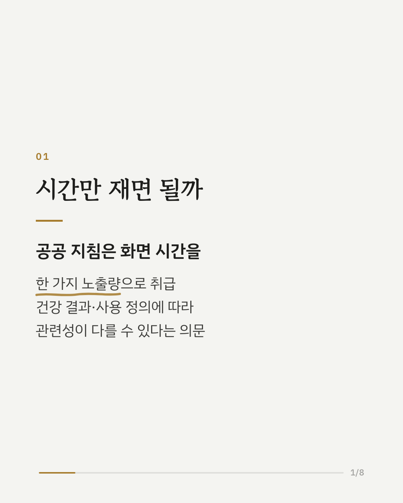
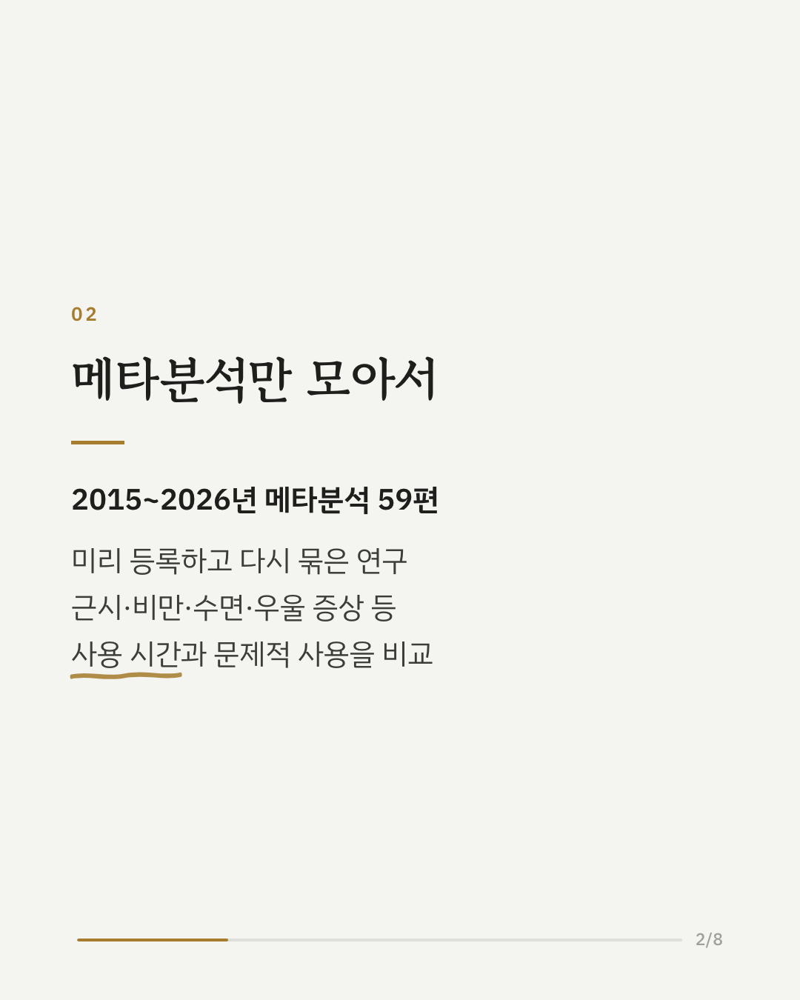
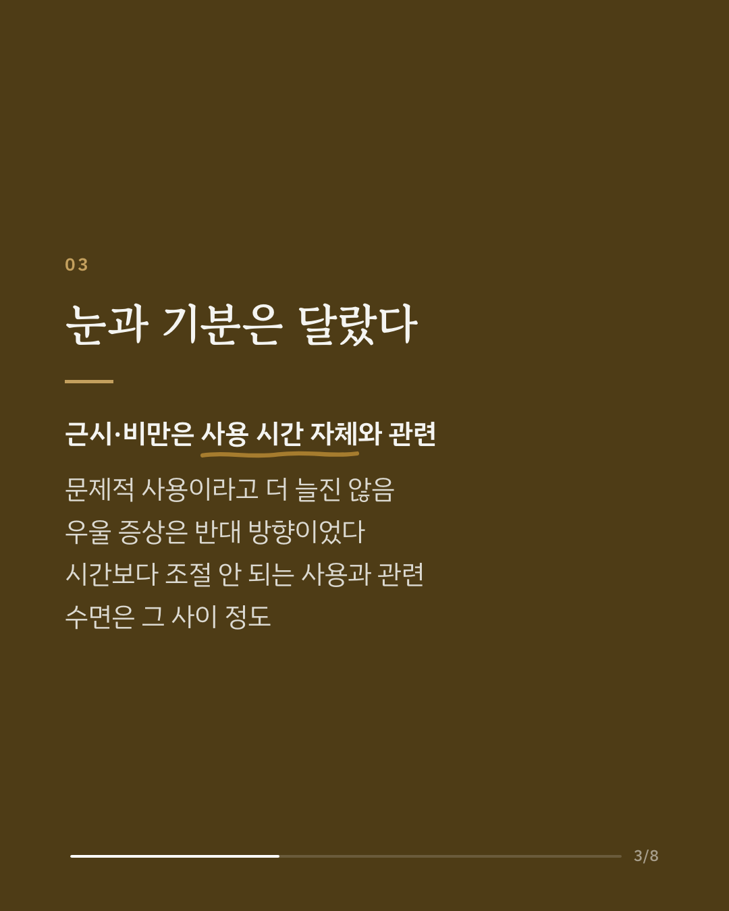
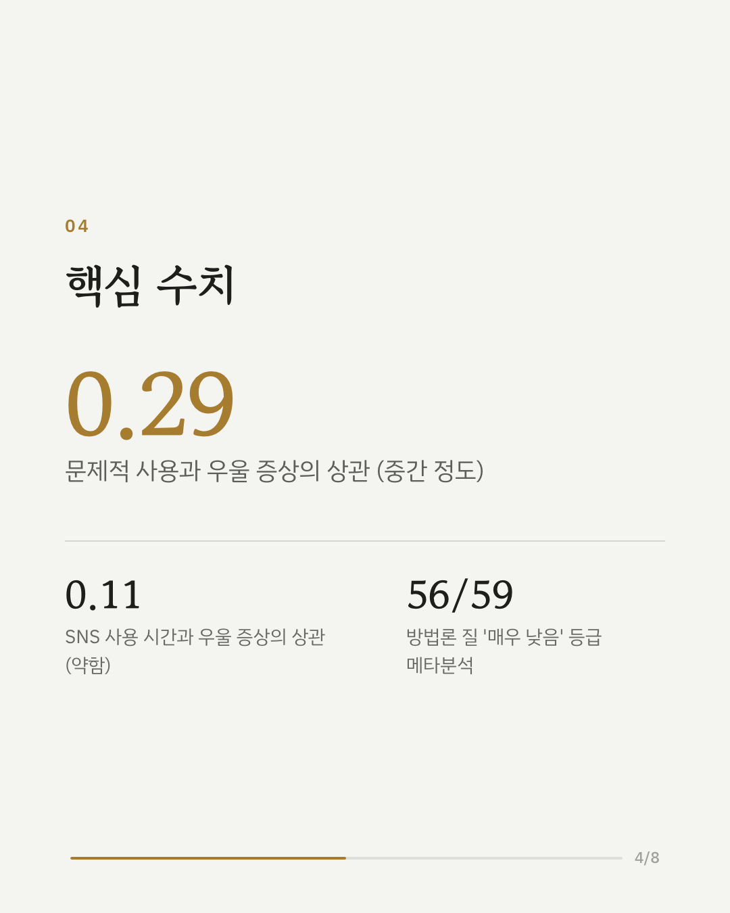
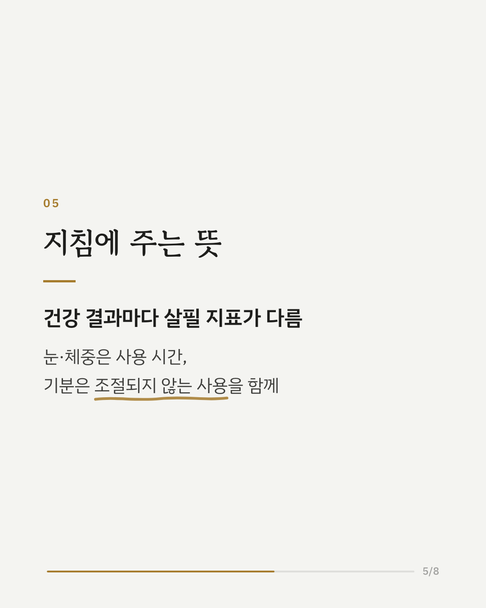
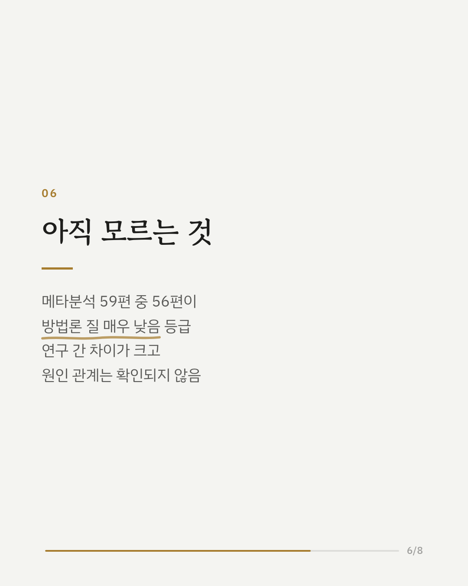
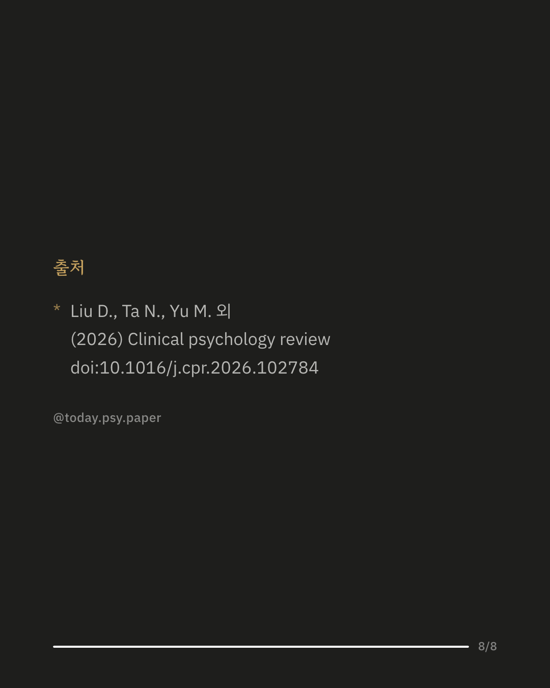

스크린 타임은 흔히 하루에 몇 시간을 썼는지로만 이야기됩니다. 이 연구는 사용 시간과 문제적 사용(스스로 조절하기 어려운 사용) 중 무엇이 우울 증상, 수면, 근시 같은 건강 결과와 더 관련 있는지 메타분석 59편을 모아 비교했습니다. 결과는 건강 결과마다 달랐습니다. 근시와 과체중·비만은 전반적인 화면 사용 시간과 작거나 중간 정도의 관련이 있었고, 문제적 사용이라고 이 관련이 더 강해지지는 않았습니다. 반대로 우울 증상은 SNS 사용 시간과의 상관이 0.11로 약했지만, 문제적 사용과는 0.29로 더 뚜렷했습니다. 수면은 그 중간이었습니다. 연구진은 이를 바탕으로 건강 결과에 따라 누적 사용량, 자세 변화, 조절되지 않는 사용이 서로 다르게 작용할 수 있다는 가설 틀을 제안했습니다. 다만 포함된 메타분석 59편 중 56편이 방법론 질 평가에서 '매우 낮음' 등급이었고 연구 간 차이도 커서, 원인 관계로 해석할 수는 없습니다. Clinical Psychology Review (2026), 'Exposure quantity or engagement quality? A differential amplification framework of digital engagement and health outcomes.' DOI: 10.1016/j.cpr.2026.102784 #스크린타임 #스마트폰중독 #SNS중독 #우울증상 #임상심리 #정신건강정보 #심리학연구 #논문리뷰
python3 publish.py 42759324